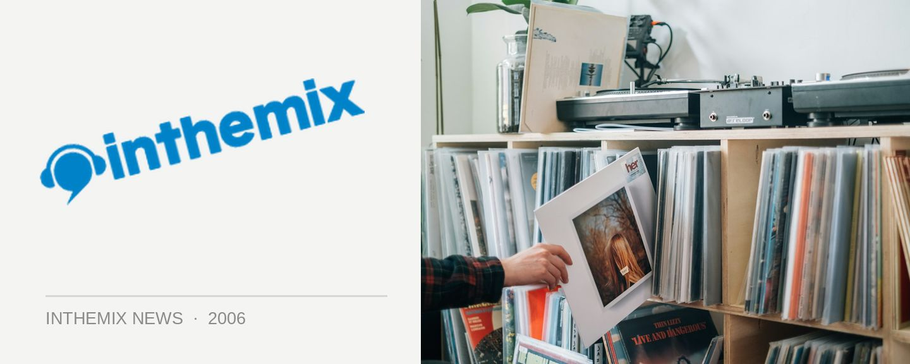

Deep As Fu*k scores special mystery guest for January
A mystery DJ from Great Stuff Recordings in the UK has been selected to headline at the next Deep As Fuck party, scheduled for Saturday January 6 at the Phoenix Bar, 34 Oxford St. Darlinghurst. Attendees can expect a heavy serving of electro-punk, techno and minimal beats.
The Great Stuff Recordings guest is said to don multiple roles as a DJ, producer, engineer and most recently lead singer and guitarist in his latest tech-rock crossover project. He is apparently notorious for his bootleg, and will be supported by another international guest in the form of The Outlaws.
Marcotix, RifRaf, Panos and more are also on the bill, check out www.deepasfunk.com for presale tickets.